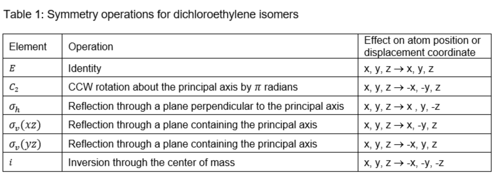
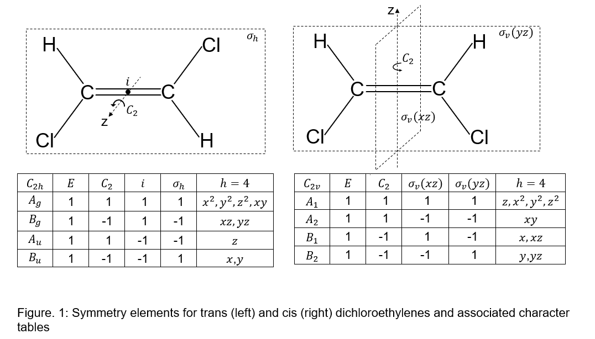
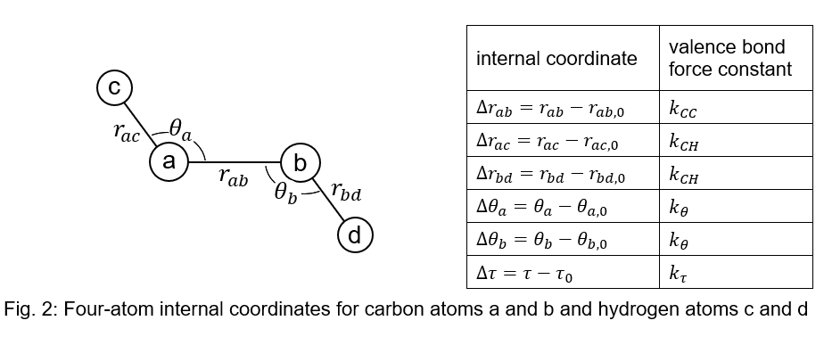
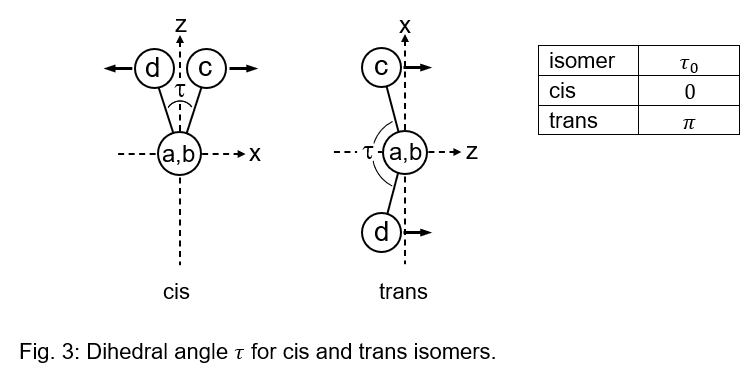
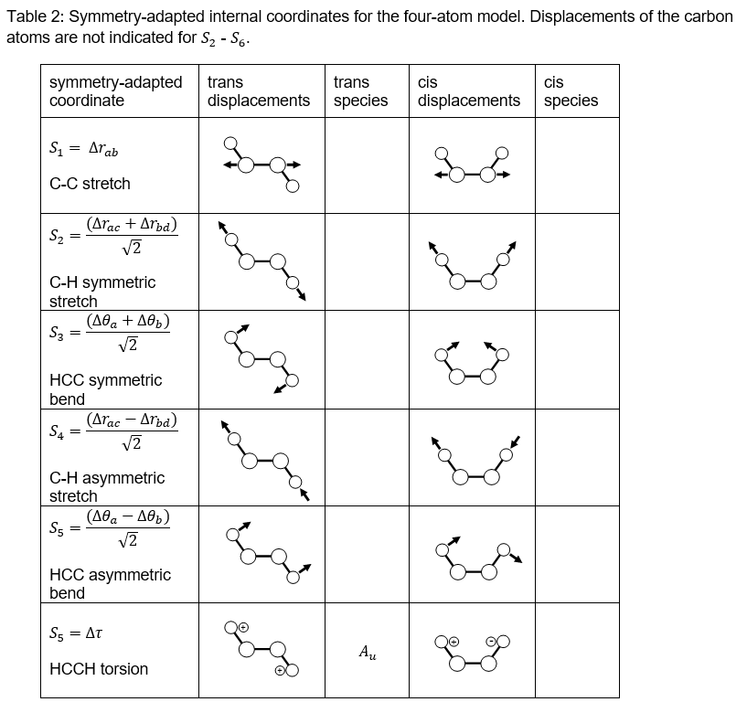

🧪 Lab Supplement: Raman Spectroscopy#
🎯 Objectives#
Demonstrate symmetry principles in vibrational spectroscopy
Predict IR and Raman-active vibrational modes for a polyatomic molecule
📘 Learning Outcomes#
By the end of this lab, you should be able to:
Identify the symmetry of simple molecules
Differentiate between Raman and Infrared (IR) active vibrational modes
Use computational and spectroscopic tools to identify vibrational modes
Calculate force constants using spectral data
💡 Tip:
You can run this notebook interactively in Google Colab using the “Open in Colab” button on your Jupyter Book page.
⚗️ Introduction#
Vibrational spectroscopy is one of the most valuable techniques available for investigating the structural and electronic properties of molecules. In Chem 3141L you may recall using Fourier Transform Infrared Spectroscopy (FTIR) to analyze vibrational and rotational properties of carbon monoxide, a linear diatomic molecule. Similarly, in this experiment the vibrational frequencies of both cis and trans isomers of dichloroethylene (DCE) will be investigated, however due to the nonlinearity of the molecule, the FTIR spectra is not sufficient to measure all vibrational modes. While CO is a diatomic that is IR active, not all diatomics will produce an IR spectrum as you were not able to see \(O_{\mathrm{2}}\) or \(N_{\mathrm{2}}\) in the background correction. Why?
To be IR active there needs to be a change in dipole moment. Does that mean \(O_{\mathrm{2}}\) doesn’t vibrate? \(O_{\mathrm{2}}\) will vibrate but the symmetry of the molecule causes the dipole moment to cancel out. For vibrational modes in which the dipole moment does not change another technique is employed. Raman spectroscopy detects changes in the molecular polarizability rather than dipole moments, which means symmetric vibrations can be observed.
In this activity the vibrational frequencies of the cis and trans isomers of DCE will be measured in the laboratory using both IR and Raman spectroscopies and from these vibrational modes the force constants can be measure. In the process, the complimentary nature of the IR and Raman techniques to probe molecular properties will be demonstrated to prepare you for Exp 31 this semester, where you will be using these techniques to investigate \(CO_{\mathrm{2}}\) .
Before jumping into the experiment, we need a foundation in symmetry and to be able to visualize molecular motions in 3D space. In physical chemistry class we learn that a nonlinear molecule consisting of N atoms has 3N – 6 independent normal modes of vibration, with the \(i^{\mathrm{th}}\) mode described by a normal coordinate \(Q_{\mathrm{i}}\), harmonic force constant \(k_{\mathrm{i}}\), and vibrational frequency \(v_{\mathrm{i}}\). The normal mode displacements and frequencies can be calculated using molecular modeling programs, e.g. Gaussian, to estimate the molecular electronic energy and then to evaluate the appropriate derivatives. This approach is used in Refs. 1 and 2 to calculate fairly accurate vibrational frequencies for cis and trans DCE. However, computational methods provide relatively little insight into the manner that a particular bond (with characteristic bond length, bond angle, atomic masses, force constant) contributes to a given normal mode.
In this experiment, we outline a conventional normal coordinate analysis used to derive expressions for the vibrational frequencies of cis and trans DCE. The analysis takes advantage of the symmetries of these molecules to simplify the mathematical expressions, leading to analytical expressions for some of the bond force constants. However, in general, numerical methods are required for a complete solution and a primary goal of this experiment is to provide experience using the appropriate mathematical methods and programs. Another important goal is to demonstrate the value of molecular symmetry for identifying the allowed normal modes with the vibrational peak frequencies measured experimentally.
In this experiment, we use a variation of a normal coordinate analysis to obtain approximate analytical expressions for some of the vibrational frequencies of cis and trans dichloroethylene. In order to simplify the calculations, we can take advantage of the symmetry of these molecules to reach analytical solutions. Symmetry will also be important in assigning the vibrational frequencies to particular vibrational modes.
As not all students have taken an inorganic class, we have provided a brief overview of identifying point groups and some basic information regarding symmetry. Review the material and answer the questions prior to attending lab.
Dichloroethylene Point Group#


Four-Atom Model#
Instead of treating dichloroethylene with \(3 \times 6 - 6 = 12 \) normal modes, we choose a model structure that includes only the carbon and hydrogen atoms. This assumption reduces the number of vibrational modes to six while still retaining the symmetries of the DCE isomers. Neglect of the chlorine atoms is partially justified by the fact that the C–H bonds vibrate at much higher frequencies than do the C–Cl bonds and we can assume that the heavier chlorine atoms are stationary by comparison, or equivalently, that their vibrational force constants are zero.³ We shall see that the four-atom model proves useful for assigning many of the peaks in DCE IR and Raman spectra to the normal vibrational modes and provides realistic force constants for individual bonds.
We start by employing the valence bond model in which the stretching and bending vibrations of individual bonds are described by harmonic potential functions with associated force constants. The displacements of the atoms are expressed in terms of internal coordinates such as the set defined in Fig. 2. Where the bond stretching modes are shown as \( \Delta r \), the in-plane bending as \( \Delta \theta \) and the out-of-plane (aka dihedral angle) bending (also called wagging) as \( \Delta \tau \). For the wagging mode, there are actually two in dichloroethylene, but in the four-atom model there is only one and it is equivalent to torsional motion — the relative motion between the two HCC planes. Denoting the dihedral angle as \( \tau \), the equilibrium value \( \tau_0 \) differs for the cis and trans isomers as shown in Fig. 3 and the direction of the displacement \( \Delta \tau = \tau - \tau_0 \) is also different as hydrogen atoms move in the same direction for the trans isomer and in opposite directions for the cis isomer.


As described in Appendix A, calculation of the vibrational frequencies involves solution of the secular equations – a set of six coupled equations for which the solutions can be expressed as the determinant of a 6x6 matrix. Expressed in the individual bond coordinates, this is equivalent to factorization of a sixth-order polynomial. But by transforming to a new set of coordinates that reflect the symmetry of the molecule, the secular matrix reduces to a block-diagonal form that yields simple analytical expressions for some of the vibrational frequencies. The symmetry-adapted coordinates {\({S_i }\)} defined in Table 2 are expressed in terms of the internal coordinates in such a way as to transform according to the symmetry species of the \(C_{2h}\) or \(C_{2v}\) point groups. In Table 2, displacement vectors are drawn for one half-cycle of each vibration (and these vectors are reversed for the second half-cycle). For modes \(S_2\) - \(S_6\), only displacements of the hydrogen atoms are shown, but smaller displacements of the carbon atoms may also be necessary so that the molecular center of mass does not change during the vibration. These displacements have been omitted as they do not affect the symmetry species. We will see that vibration-al modes labeled by different symmetry species are uncoupled resulting in a simplification of the secular equations. But first we describe the procedure for identifying the symmetry species of a vibration.
Create a copy of this table with the drawings in your lab notebook:#

To determine the characters for a given vibrational mode with coordinate \(S_i\), rotate, reflect, or invert the components of all displacement vectors and compare the initial and final configurations. If the final displacement vectors are identical to the initial, the character of that operation is 1. If the final displacement vectors are opposite in direction to the initial, the character of that operation is -1.
Let us take for example the torsional mode \(S_6=\Delta\tau\) for the trans isomer. The identity operation \(E\) leaves the displacement vectors unchanged (character 1) while \(C_2\) rotates the displacement vectors \(180^\circ\) about the \(z\) axis (perpendicular to the page) also leaving them apparently unchanged (character 1). The operation \(i\) inverts the displacement vectors through the center of mass so that the initial and final displacement vectors point in opposite directions (character -1). Finally, \(\sigma_h\) reflects the displacement vectors through the plane of the page reversing their directions (character -1). Looking now at the \(C_{2h}\) character table of Fig. 1, the symmetry species for this set of characters is seen to be \(A_u\).
Besides the reduction of the secular matrix mentioned earlier, introduction of symmetry coordinates is also a powerful aid for identification of peaks in the vibrational spectra of symmetric molecules. For a vibration to be active in the IR spectrum, it must correspond to a changing molecular dipole moment. This means that a vibration has the same symmetry species as a linear (\(x\), \(y\), or \(z\)) coordinate. From the character tables of Fig. 1, this would be the \(A_u\) or \(B_u\) modes for a \(C_{2h}\) molecule or the \(A_1\), \(B_1\) and \(B_2\) modes for a \(C_{2v}\) molecule.
On the other hand, to be active in the Raman spectrum the vibration must involve a changing molecular polarizability which has the same symmetry species as a quadratic (\(x^2\), \(y^2\), \(z^2\), \(xy\), \(xz\), or \(yz\)) coordinate. This is the \(A_g\) or \(B_g\) modes for \(C_{2h}\) and \(A_1\), \(B_1\), \(A_2\), or \(B_2\) modes for a \(C_{2v}\). Note that for \(C_{2h}\), a vibration active in the IR spectrum cannot be active in the Raman spectrum and vice versa. This is a general property of molecules with an inversion symmetry element and is referred to as the Rule of Mutual Exclusion.
Valence Bond Force Constants and Vibrational Wavenumbers#
Derivation of the secular equation for vibration is outlined in Appendix A which can be found on the Canvas page. Following the approach of Wilson, Decius, and Cross, a matrix \(G\) associated with the vibrational kinetic energy and a matrix \(F\) associated with vibrational potential energy are defined in terms of the internal coordinates. Minimization of the total energy leads to the vibrational secular equation:
1 \(|GF-E\lambda|=0\) \(\lambda=(2\pi\nu)^2=(2\pi c\tilde{\nu} )^2\)
where the vertical bars indicate the determinant of a matrix and \(\tilde{\nu}\) is the wavenumber of a vibration. Expressed in the symmetry-adapted internal coordinates {\(S_i\)}, the \(G\) and \(F\) matrices for the four-atom model are written in Eqs. A8 and A9 in terms of the bond angles and bond lengths defined in Fig. 2. The diagonal elements of the \(F\) matrix represent the valence bond force constants defined in Fig. 2 (e.g \(k_{CC}\) for carbon-carbon bond stretching). The off-diagonal elements of \(F\) represent interactions among these bond force constants as described in Appendix B. If these interactions are neglected, the matrix \(GF\) in Eq. A10 can be broken into a block-diagonal form with the coordinates \(S_1\), \(S_2\), and \(S_3\) forming a \(3x3\) block, \(S_4\) and \(S_5\) forming a \(2x2\) block, and \(S_6\) forming a \(1x1\) block. From determinant rules, the \(S_6\) block gives:
2 \(G_{66} k_\tau-\lambda=0\)
Where \(G_{66}\) is an equation that uses experimental data and values that can be looked up. Thus, with simple algebraic manipulations an analytical expression for the force constant, \(k_\tau\), can be calculated. For the mode \(S_6\) the vibrational wavenumber is denoted as \(\tilde{\nu}_{S6}\), which can be identified in the IR or Raman spectrum and using computational modeling, the bond lengths, \(r_{(CC,0)}\), \(r_{(CH,0)}\), and bond angle, \(\theta_0\), can be readily found. The expression is actually much simpler for the trans isomer with \(\tau_0=\pi\) than for the cis isomer with \(\tau_0=0\). Assuming \(\theta_0=2\pi/3\) (\(120^\circ\) bond angles), Eq. 2 can be written:
3 trans DCE: \(k_\tau=\frac{(3(2\pi c\tilde{\nu}_{S6} )^2)}{(8 \rho_{CH}^2 (\mu_C+\mu_H ) )}\)
with inverse masses \(\mu_k=1/m_k\) and inverse bond length \(\rho_{kl}=1/r_{(kl,0)}\). Note that \(k_\tau\) has units of force \(\cdot\) length. In order to be consistent with stretching force constants expressed in N/cm, it is convenient to express bending force constants in Å\(^2\)N/cm.
For the trans isomer, an even greater reduction of the secular equation is achieved because the matrix element \(G_{45}\) coupling \(S_4\) (asymmetric stretching) and \(S_5\) (asymmetric bending) is zero and we find: \(G_{44} k_{CH}-\lambda=0\) and \(G_{55} k_\theta-\lambda=0\) giving relatively simple equations for force constants \(k_{CH}\) and \(k_\theta\):
4 trans DCE: \(k_{CH}=\frac{(2\pi c\tilde{\nu}_{S4} )^2}{(\mu_C+\mu_H )}\) \(k_\theta=\frac{(2\pi c\tilde{\nu}_{S5} )^2}{(\rho_{CH}^2 (\mu_C+\mu_H ) )}\) (\(F_{45}=k_{(CHa,\theta a)}=0\))
where \(\tilde{\nu}_{S4}\) and \(\tilde{\nu}_{S5}\) are the wavenumbers (cm\(^{-1}\)) for the C-H asymmetric stretching and asymmetric bending vibrations. We would expect to measure the wavenumbers \(\tilde{\nu}_{S4}\), \(\tilde{\nu}_{S5}\), and \(\tilde{\nu}_{S6}\) from either the IR or Raman spectrum of trans DCE depending on the symmetry species of the mode (see your Table 2).
You will need to include the calculations of \(k_\tau\), \(k_CH\), and \(k_\theta\) including all work and steps in your lab notebook. **Pay attention to units! **
⚗️ Approach#
The FTIR spectrum for trans-dichloroethylene, together with Eqs. (3) and (4), determines three of the four force constants —
\( k_{\mathrm{CH}} \), \( k_{\theta} \), and \( k_{\tau} \) — within the approximations applied.
The remaining force constant, \(k_{\mathrm{CC}} \), requires measurement of the Raman spectrum, because the carbon–carbon stretch \( \bar{\nu}_{\mathrm{CC}} \) does not change the molecular dipole moment and is therefore absent in the FTIR spectrum.
You will be asked to enter in values for these four force constants, molecular geometries, atomic masses, and all measured FTIR and Raman transitions in wavenumbers as an initial step of this notebook.
Intuiting the CC force constant#
Rather than measure or calculate \(k_{\mathrm{CC}} \) explicitly, you will utilize this notebook to guess and check values within a range that you will set using your chemical intuition. You will complete select lines of code to complete an implementation of the \({\bf FG}\) matrix method, which given a complete of force constants, molecular geometry, and atomic masses, enables computation of the Raman and FTIR transition frequencies. The notebook will also provide a slider that you can use to adjust your guess of \(k_{\mathrm{CC}} \). As you adjust the slider, the notebook should update the \({\bf FG}\) matrix, estimate of the frequencies, and provide an analysis of the closeness of the reesults of the \({\bf FG}\) method to your measured values. Your goal is to minimize the error by identifying the best possible value of \(k_{\mathrm{CC}} \).
💻 Computational Setup#
Several scientific programs can perform these calculations,
but here we’ll use a Jupyter notebook built in Python to calculate elements of the G matrix.
A notebook link is provided on Canvas — open it in a browser.
Click the 🚀 Rocket icon (top right) and select “Open in Colab.”
Go to File → Save a copy in Drive, and rename it to:
your_last_name_RamanLabRun the first code block to import all required functions and constants.
When successful, you’ll see a ✅ green checkmark next to the cell.
💡 Tip:
Remember that FTIR and Raman spectroscopy are complementary techniques —
together, they allow you to determine all four force constants for the molecule.
🧰 Importing Required Libraries#
In this notebook, we’ll use a few standard Python libraries:
NumPy — for numerical calculations and array handling
SciPy — for scientific utilities and signal processing
Matplotlib — for plotting and data visualization
ipywidgets and IPython for interactive slider features
google.colab.files for loading data files to google colab
pandas for parsing csv files
Run the following cell to import the required modules.
import numpy as np
import matplotlib.pyplot as plt
from ipywidgets import interact, FloatSlider
from IPython.display import display, HTML
from google.colab import files # collab specific package
import pandas as pd # to create DataFrame object from CSV
🧾 Preparation#
You’ll need your data collected from Week 1 —
you did bring your lab notebook, right? 😄
In the next cell, enter the appropriate values after each colon (:) for:
Bond lengths (in Å)
Bond angles (in radians)
Atomic masses (in amu)
Force constants
Expected Vibrational Frequencies (in \(cm^{-1}\), ordered from largest to smallest values NOT in the same order as the worksheet)
Be sure to record your values carefully —
these will be used in subsequent calculations of the G matrix and force constants.
# STUDENT INPUT SECTION
# Replace placeholder values with experimental or calculated ones as directed in lab handout.
# Student input dictionary template
student_input = {
# Geometry (distances in Å, angles in radians, mass in AMU)
"tau": np.pi, # 0 for cis, π for trans
"C-C bondlength": 1.31,
"C-H bondlength": 1.07,
"C-C-H bond angle": 2 * np.pi / 3,
"C mass": 12.01,
"H mass": 1.008,
# Force constants (N/cm or Ų N/cm as noted)
"C-H force constant": 5.217, # kCH (N/cm)
"C-C–C-H interaction": 0.30, # kCCCH (N/cm)
"C-C–bend interaction": 0.05, # kCCth (Å N/cm)
"C-H–bend interaction": 0.16, # kCHatha (Å N/cm)
"bend-bend coupling": 0.00, # kthathb (Ų N/cm)
"bend force constant": 0.902, # ktheta (Ų N/cm)
"torsion force constant": 0.1893, # ktau (Å N/cm)
# Expected vibrational frequencies in cm⁻¹ -
#
"S1": 3086,
"S2": 3073,
"S3": 1577,
"S4": 1271,
"S5": 1199,
"S6": 897
}
🧠 Understanding the Force Constants#
Before constructing the F matrix, let’s review the meaning of each force constant.
Each constant describes how strongly the potential energy changes when certain internal coordinates (bond lengths, angles, or torsions) are displaced.
These constants appear in the potential energy expansion:
where each \(q_i\) represents an internal coordinate of the molecule
(e.g., a bond stretch, bend, or torsional displacement).
📘 Table of Force Constants#
Symbol |
Description |
Coordinates Coupled |
Typical Units |
|---|---|---|---|
\(k_{CC}\) |
C=C stretch force constant |
\(r_{CC}\) |
N·cm⁻¹ |
\(k_{CH}\) |
C–H stretch force constant |
\(r_{CH}\) |
N·cm⁻¹ |
\(k_{CCCH}\) |
Coupling between C=C stretch and C–H stretch |
\(r_{CC}\), \(r_{CH}\) |
N·cm⁻¹ |
\(k_{CC\theta}\) |
Coupling between C=C stretch and C–C–H bend |
\(r_{CC}\), \(\theta\) |
Å·N·cm⁻¹ |
\(k_{CH\alpha\theta}\) |
Coupling between C–H stretch and C–C–H bend |
\(r_{CH}\), \(\theta\) |
Å·N·cm⁻¹ |
\(k_{\theta}\) |
Mean C–C–H bend stiffness |
\(\theta_a\), \(\theta_b\) |
Ų·N·cm⁻¹ |
\(k_{\theta_a\theta_b}\) |
Coupling between the two C–C–H bending coordinates |
\(\theta_a\), \(\theta_b\) |
Ų·N·cm⁻¹ |
\(k_{\tau}\) |
Torsional force constant (H–C–C–H twist) |
\(\tau\) |
Å·N·cm⁻¹ |
💬 Key Idea#
Diagonal terms (like \(k_{CC}\) or \(k_{CH}\)) represent independent motions.
Off-diagonal terms (like \(k_{CCCH}\) or \(k_{CC\theta}\)) describe coupling between motions.
These couplings explain why vibrational modes are often mixed rather than purely stretching or bending.
💡 Later in the analysis, these constants will determine how energy is shared among vibrations through the F and G matrices.
🧮 Constructing the F Matrix#
The F matrix (force constant matrix) represents how the potential energy of the molecule changes with respect to the internal coordinates (bond stretches, bends, torsions, and couplings).
From the Numerical Calculation section of your lab handout, the F matrix elements are given by:
All other matrix elements are zero.
The matrix is symmetric, so \( F_{ij} = F_{ji} \).
To-Do: Complete build_F_matrix(kCC, params): function#
The function below is partially completed. You will need to complete the lines that assign elements \(F_{11}\), \(F_{12}\), and \(F_{13}\) according to the formulae abouve. In particular, you need to complete only the lines
F11 = #<== complete here!
F12 = #<== complete here!
F13 = #<== complete here!
using correct python / numpy syntax.
def build_F_matrix(kCC, params):
"""
Build the F (force constant) matrix for dichloroethylene.
Parameters:
-----------
kCC : float
C-C double bond force constant (N/cm)
params : dict
Dictionary containing other force constants
Returns:
--------
F : ndarray (6x6)
Force constant matrix
"""
# Extract force constants from params
kCH = params["C-H force constant"]
kCCCH = params["C-C–C-H interaction"]
kCCth = params["C-C–bend interaction"]
kCHatha = params["C-H–bend interaction"]
kthathb = params["bend-bend coupling"]
ktheta = params["bend force constant"]
ktau = params["torsion force constant"]
# Initialize 6x6 symmetric matrix
F = np.zeros((6, 6))
# Define elements F11, F12, F13
F11 = #<== complete here!
F12 = #<== complete here!
F13 = #<== complete here!
# Fill non-zero elements according to the provided formula
F[0, 0] = F11
F[0, 1] = F12
F[0, 2] = F13
### These next three lines will be absent in the student version
F[0, 0] = kCC
F[0, 1] = np.sqrt(2) * kCCCH
F[0, 2] = np.sqrt(2) * kCCth
F[1, 1] = kCH
F[1, 2] = kCHatha
F[2, 2] = ktheta + kthathb
F[3, 3] = kCH
F[3, 4] = kCHatha
F[4, 4] = ktheta - kthathb
F[5, 5] = ktau
# Make symmetric (fill lower triangle)
F = F + F.T - np.diag(F.diagonal())
return F
⚙️ Constructing the G Matrix (Full Expressions)#
The G matrix represents the kinetic coupling between the six internal coordinates shown in your Figure 2.
From the Numerical Calculation section of the lab handout, the matrix elements are:
and the \(G\) elements are:
All other \(G_{ij}\) values are zero in this simplified model.
To-Do: Complete build_G_matrix(params): function#
The function below is partially completed. You will need to complete the lines that assign elements \(G_{11}\), \(G_{12}\), and \(G_{13}\) according to the formulae abouve. In particular, you need to complete only the lines
G11 = #<== complete here!
G12 = #<== complete here!
G13 = #<== complete here!
using correct python / numpy syntax.
💡 Tip: The diagonal terms represent self-coupling of internal coordinates,
while the off-diagonal terms (\(G_{12}\), \(G_{13}\), etc.) capture kinetic coupling between motions.
def build_G_matrix(params):
"""
Build the G (kinematic) matrix for dichloroethylene.
Parameters:
-----------
params : dict
Dictionary containing geometric and mass parameters
Returns:
--------
G : ndarray (6x6)
Kinematic matrix
"""
# Extract parameters
tau = params["tau"]
rho_CC = 1 / params["C-C bondlength"]
rho_CH = 1 / params["C-H bondlength"]
m_C = params["C mass"]
m_H = params["H mass"]
# Convert AMU to appropriate units (1 AMU = 1.66054e-27 kg)
# For consistency with force constants in N/cm, use reciprocal masses in AMU⁻¹
mu_C = 1.0 / m_C
mu_H = 1.0 / m_H
# Calculate intermediate quantities
A = (mu_H + mu_C) * rho_CH**2
B = mu_C * rho_CC * (2 * rho_CC + rho_CH)
C = mu_C * rho_CC * (rho_CC / 4 * (1 + np.cos(tau)) + rho_CH)
# Initialize 6x6 symmetric matrix
G = np.zeros((6, 6))
### Define G11, G12, and G13 elements here
G11 = #<== complete here!
G12 = #<== complete here!
G13 = #<== complete here!
# Fill non-zero elements according to the provided formula
G[0, 0] = G11
G[0, 1] = G12
G[0, 2] = G13
G[0, 0] = 2 * mu_C
G[0, 1] = -np.sqrt(1/2) * mu_C
G[0, 2] = -np.sqrt(3/2) * rho_CH * mu_C
G[1, 1] = mu_C + mu_H
G[1, 2] = -np.sqrt(3) * rho_CC * mu_C * (1 - np.cos(tau)) / 2
G[2, 2] = A + B * (1 - np.cos(tau))
G[3, 3] = mu_C + mu_H
G[3, 4] = -np.sqrt(3) * rho_CC * mu_C * (1 + np.cos(tau)) / 2
G[4, 4] = A + B * (1 + np.cos(tau))
G[5, 5] = (8/3) * (A + C * (1 + np.cos(tau)))
# Make symmetric (fill lower triangle)
G = G + G.T - np.diag(G.diagonal())
return G
Putting the functionality together#
The next cell will define helper functions that create the interactive capabilities that enable you to adjust a slider to guess-and-check different values of \(k_{\rm CC}\). You need just run these cells, there is nothing to modify here!
def compute_vibrational_frequencies(kCC, params, verbose=False):
"""
Compute vibrational frequencies using the Wilson FG method.
Parameters:
-----------
kCC : float
C-C double bond force constant (N/cm)
params : dict
Dictionary containing all other parameters
verbose : bool
Whether to print detailed output
Returns:
--------
frequencies : ndarray
Vibrational frequencies in cm⁻¹
"""
# Build F and G matrices
F = build_F_matrix(kCC, params)
G = build_G_matrix(params)
if verbose:
print("F matrix:")
print(F)
print("\nG matrix:")
print(G)
# Compute FG product
FG = F @ G
if verbose:
print("\nFG matrix:")
print(FG)
# Diagonalize FG to get eigenvalues (λ)
eigenvalues, eigenvectors = np.linalg.eig(FG)
# Sort eigenvalues in descending order
idx = np.argsort(eigenvalues)[::-1]
eigenvalues = eigenvalues[idx]
if verbose:
print("\nEigenvalues (λ):")
print(eigenvalues)
# Convert eigenvalues to frequencies
# ν = (1/2πc) * sqrt(λ) where c is speed of light
# For our units: ν (cm⁻¹) = 1302.79 * sqrt(λ)
# The conversion factor accounts for units of F (N/cm) and G (AMU⁻¹)
conversion_factor = 1302.79 # Converts sqrt(eigenvalue) to cm⁻¹
frequencies = conversion_factor * np.sqrt(np.abs(eigenvalues))
return frequencies
def compare_with_expected(calculated, params):
"""
Compare calculated frequencies with expected values.
Parameters:
-----------
calculated : ndarray
Calculated vibrational frequencies
params : dict
Dictionary containing expected frequencies
"""
expected_keys = ["S1", "S2", "S3", "S4", "S5", "S6"]
expected = [params[key] for key in expected_keys]
print("\n" + "="*70)
print("COMPARISON WITH EXPECTED VALUES")
print("="*70)
print(f"{'Mode':<8} {'Calculated':<15} {'Expected':<15} {'Error':<15} {'% Error':<10}")
print("-"*70)
total_error = 0
for i, (calc, exp) in enumerate(zip(calculated, expected)):
error = calc - exp
percent_error = (error / exp) * 100 if exp != 0 else 0
total_error += abs(percent_error)
print(f"{'S' + str(i+1):<8} {calc:<15.2f} {exp:<15.2f} {error:<15.2f} {percent_error:<10.2f}%")
print("-"*70)
print(f"Mean Absolute % Error: {total_error/6:.2f}%")
print("="*70)
def interactive_spectrum(kCC_value):
"""
Interactive function called by the slider.
Parameters:
-----------
kCC_value : float
C-C double bond force constant from slider
"""
print(f"\n{'='*70}")
print(f"C-C FORCE CONSTANT: kCC = {kCC_value:.3f} N/cm")
print(f"{'='*70}\n")
# Compute frequencies
frequencies = compute_vibrational_frequencies(kCC_value, student_input, verbose=False)
print("\nCalculated Vibrational Frequencies (cm⁻¹):")
for i, freq in enumerate(frequencies):
print(f" S{i+1}: {freq:.2f} cm⁻¹")
# Compare with expected
compare_with_expected(frequencies, student_input)
# Create visualization
fig, (ax1, ax2) = plt.subplots(1, 2, figsize=(14, 5))
# Bar chart comparison
modes = [f'S{i+1}' for i in range(6)]
x = np.arange(len(modes))
width = 0.35
expected = [student_input[f'S{i+1}'] for i in range(6)]
ax1.bar(x - width/2, frequencies, width, label='Calculated', alpha=0.8)
ax1.bar(x + width/2, expected, width, label='Expected', alpha=0.8)
ax1.set_xlabel('Vibrational Mode')
ax1.set_ylabel('Frequency (cm⁻¹)')
ax1.set_title('Calculated vs Expected Frequencies')
ax1.set_xticks(x)
ax1.set_xticklabels(modes)
ax1.legend()
ax1.grid(axis='y', alpha=0.3)
# Error plot
errors = [(calc - exp) for calc, exp in zip(frequencies, expected)]
colors = ['red' if e > 0 else 'blue' for e in errors]
ax2.bar(modes, errors, color=colors, alpha=0.7)
ax2.axhline(y=0, color='black', linestyle='-', linewidth=0.8)
ax2.set_xlabel('Vibrational Mode')
ax2.set_ylabel('Error (cm⁻¹)')
ax2.set_title('Frequency Errors (Calculated - Expected)')
ax2.grid(axis='y', alpha=0.3)
plt.tight_layout()
plt.show()
Set your minimum and maximum values for the slider#
Below are two variables that will adjust the minimum and maximum values of \(k_{\rm CC}\) in \(N \cdot m\). Use your chemical intuition and the existing values of other force constants to decide a reasonable minimum and maximum value to try.
slider_min = 2 #<== insert your minimum value for k_CC here
slider_max = 10 #<== insert your maximum value for k_CC here
# Create interactive widget with slider
print("="*70)
print("WILSON FG METHOD: DICHLOROETHYLENE VIBRATIONAL SPECTRUM CALCULATOR")
print("="*70)
print("\nAdjust the C-C force constant slider to optimize the predicted spectrum")
print("Compare your calculated frequencies with the expected values\n")
# Create slider for kCC (typical range for C=C is 9-11 N/cm)
interact(interactive_spectrum,
kCC_value=FloatSlider(min=slider_min, max=slider_max, step=0.1, value=slider_min,
description='kCC (N/cm):',
continuous_update=False,
style={'description_width': 'initial'}))
#Discussion Section For each question, you must answer in complete sentences and defend your answers with strong scientific merit.
Question 1: What are the many assumptions made in this experiment? Do not just list, but discuss and explain.
Question 2a: Review the wavenumbers in Data Table 1 with respect to their cooresponding vibrational modes for trans DCE. In 2 to 3 sentences, compare and contrast the values and magnitude with the stretching and bending energies. Do your values seem reasonable? E.g. would you expect a single bond stretching to be higher or lower energy than a double bond stretching? What about bending vs. wagging?
Question 2b: Compare these values and trends with those in Data Table 2, how does symmetry impact vibrational energies? Or does it? In 3 to 5 sentences, discuss the similarities and differences and whether or not a difference was expected.
Question 2c Review the experimental with the calculated values from the python workbook in Data Table 1 & 2. Did the vibrational energies match for all modes? If not, reflect on why these values would be different than experimental. Hint: Think about the process and assumptions that went into these calculations.
Question 2d The last column in Data Table 1 & 2 were the wavenumbers collected from Gaussian. Were the values within +/- 20 \(cm^{-1}\) (which is what I would define as “reasonable”) ? If not, was there a trend that could be compared? What could be done to improve the accuracy of the Gaussian values? Hint: Don’t say more trials, because would rerunning the same computational experiment actually help in this case? If you are stuck, refer back to your Gaussian training Google doc.
Question 3: Cis DCE has vibrations that are both IR and Raman active. Review these modes, are the vibrational peaks the same in IR and Raman? If not, discuss why these values may vary between techniques.
Question 4a: Reviewing Data Table 1,rank the force constants in Data Table 3 from weakest to strongest using the internal coordinate (e.g \(k_{\theta_a\theta_b}\) )
Question 4b: In the pre-lab for Week 2 of this experiment, you were asked to predict the strongest and weakest force constant. How did your predictions hold up compared to ranking in 4a? Similar to your discussion in Question 2a, discuss and explain the relationship between the force constant value and energy. Note: You should be discussing all force constants, even the ones provided. Hint: What is a force constant, what does the magnitude tell you? You may want to refer to the wavenumber to help support your reasoning.
Question 4c: While not all force constant values can be found in literature, many of them can. A good resource if you can find the book is: Gerhard Herzberg, Infrared and Raman Spectra of Polyatomic Molecules (Van Nostrand Reinhold Company, New York, 1945), Chapter 2. Were the calculated values within 5% of the liturature values? In 1 to 3 sentences, discuss why or why not. In 2 to 5 sentences, what does these comparisons tell you about the assumptions made?
Question 5a Based on the comparisons and discussions of the previous questions, were all the assumptions reasonable? Why or why not? Defend your stance with data and theory. Do not just say it agrees/disagrees with literature values.
Question 5b: In previous years, the interaction force constants (\(k_{CC,CH}\) ,\(k_{CH_a,\theta_a}\), \(k_{CC,\theta}\), & \(k_{\theta_a,\theta_b}\)) were assumed to be 0. This year, the numerical values were calculated and provided for you. Which method would you recommend for next time we do this experiment? Defend the choice of either assuming the values are zero, giving the values, or would you recommend having future students calculate these values which would require more python calculations of matrices?
Question 6a: One of the assumptions we made to simplify the calculations in this experiment was to ignore the two chlorine atoms in the molecule. Why did we make this assumption? Using more than, “it would become more accurate,” how do you suppose the force constants would change if we added the atoms back into the calculations?
Question 6b: Consider if we used fluorine atoms instead of chlorine atoms, would we be more or less likely to find the assumption to ignore them as valid? What if we instead used bromines or heavier R groups?
Question 6c: How might the presence of these two different halogens groups impact the force constants? In 2 to 5 sentences, explain the relationship between force constants and the size of the R groups. Hint: Will all the force constants be affected, if any?
Question 7 Discuss the limitations of Theory (Gaussian) and of instrumentation (FTIR/RAMAN). In what scenario(s) would one method be preferred over the other?